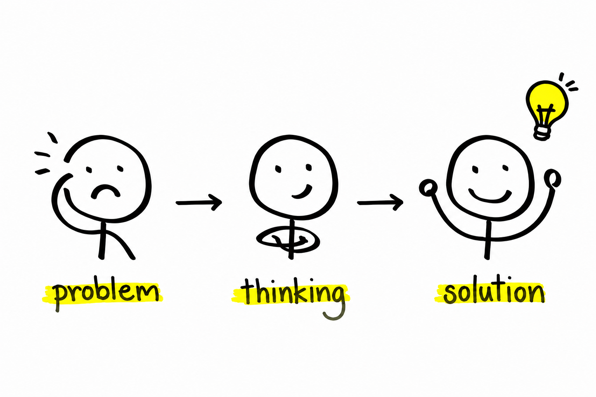
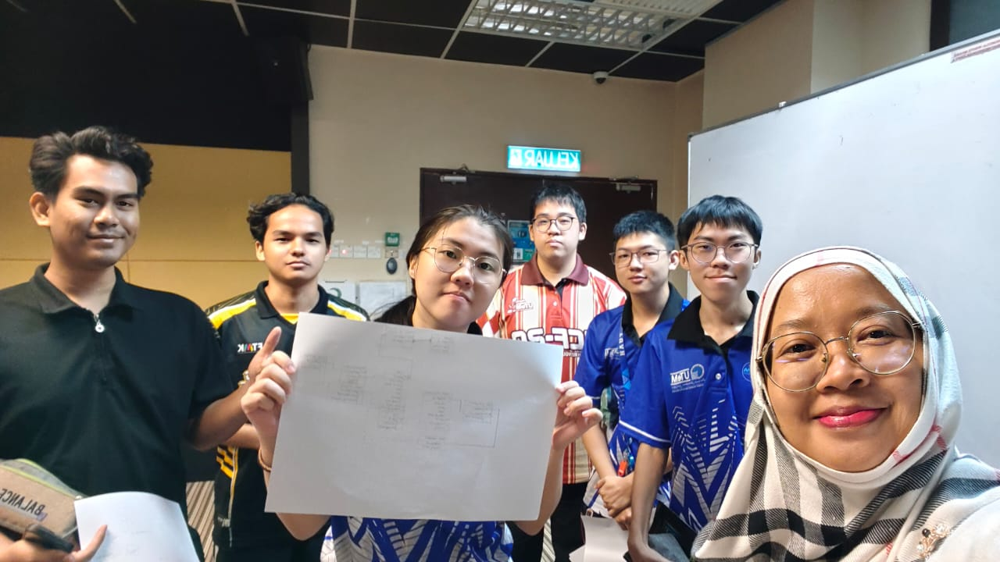
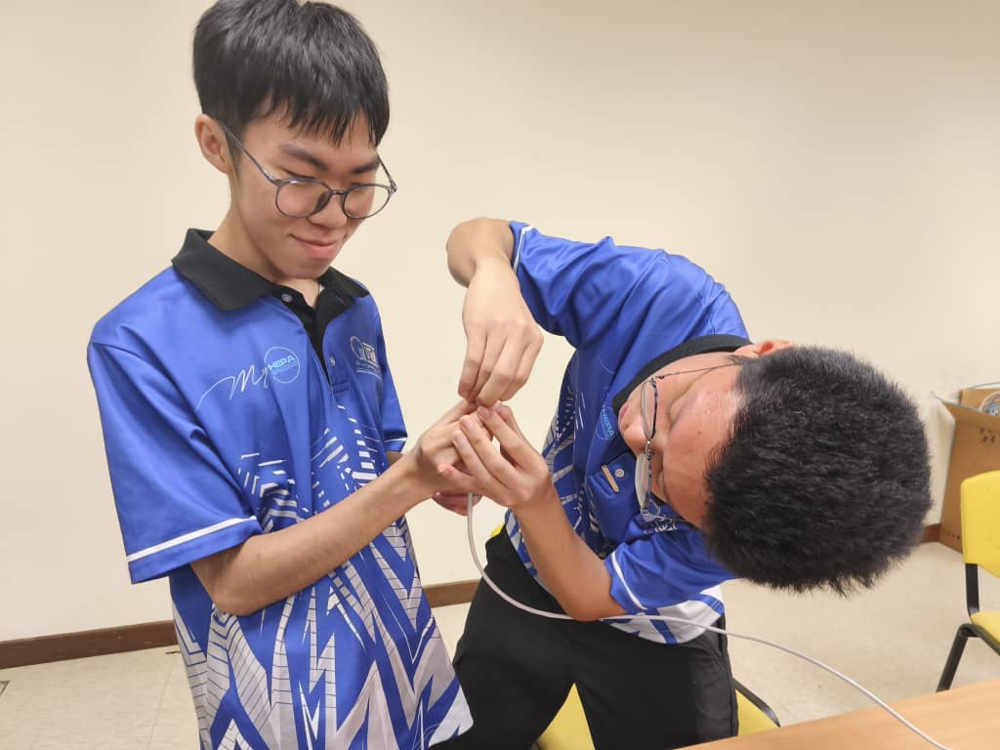
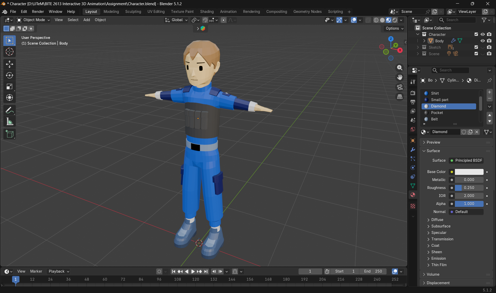
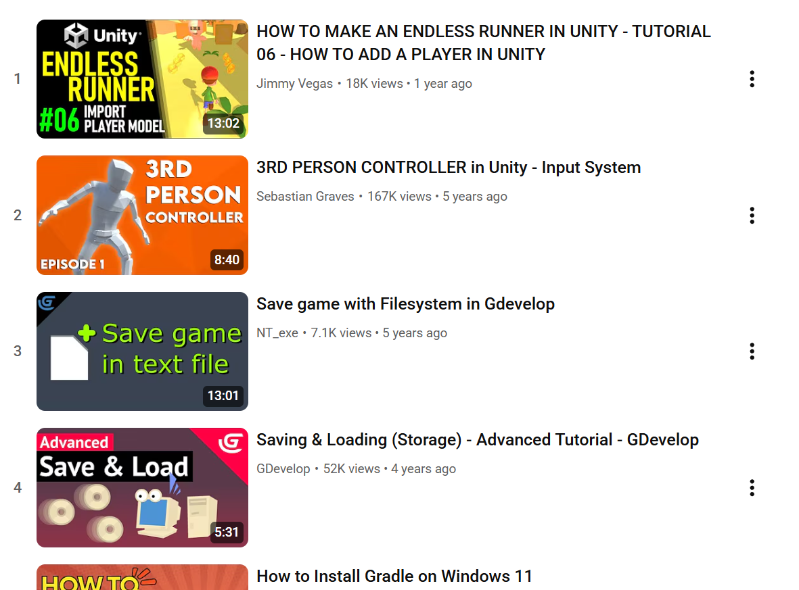

Personal traits and values that guide my academic work, game development projects, and teamwork experiences.

I enjoy analysing challenges and finding practical solutions. Whether debugging code, designing game mechanics, or resolving technical issues, I approach problems logically and systematically.

I work effectively with team members by communicating ideas clearly, sharing responsibilities, and supporting others to achieve common goals.

I am willing to learn new technologies and tools whenever required. Throughout my studies I have adapted to different programming languages, game engines, and development environments.

Creativity helps me design engaging game experiences, visual interfaces, and interactive solutions that are both functional and enjoyable for users.

I actively seek opportunities to improve my skills through online tutorials, documentation, personal projects, and experimentation with new technologies.